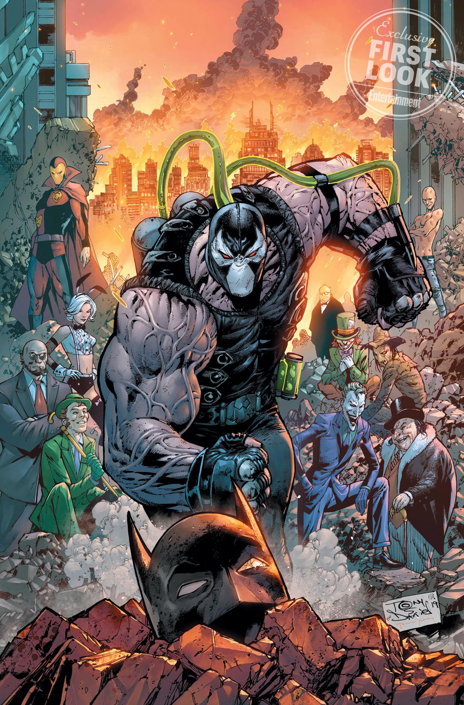

Registros do Asilo Arkham

Relatório contendo os perfis de ameaça dos criminosos mais perigosos detidos ou procurados pela cidade.
| Codinome | Identidade Real | Nível de Perigo | Status Penitenciário |
|---|---|---|---|
| Coringa | Desconhecida | Extremo | Internado em Arkham |
| Mulher-Gato | Selina Kyle | Moderado | Em Liberdade |
| Charada | Edward Nygma | Alto | Internado em Arkham |
| Bane | Desconhecida | Crítico | Penitenciária Blackgate |
| Pinguim | Oswald Cobblepot | Alto | Sob Investigação (Iceberg Lounge) |
| Espantalho | Dr. Jonathan Crane | Extremo | Internado em Arkham |
Protocolos de Contenção
Indivíduos classificados com nível Extremo ou Crítico possuem celas especiais monitoradas 24 horas no Asilo Arkham e na Penitenciária de Blackgate.